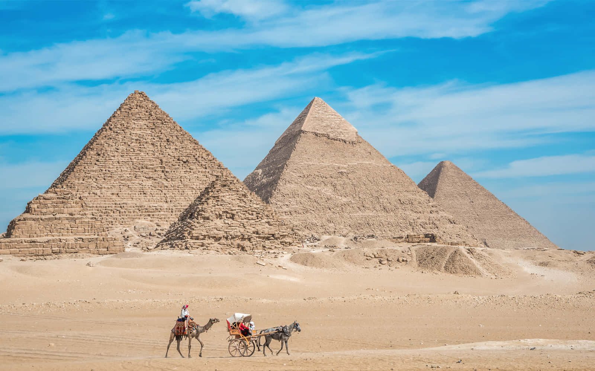

my best plces to see it in Egypt
\the pyrmades
Pyramids are ancient monumental structures with triangular outer surfaces converging to a point, primarily built as royal tombs in Egypt and Sudan, or as temples in Mesoamerica. Used to protect pharaohs' remains and facilitate their journey to the afterlife, these structures also serve as iconic, durable symbols of past civilization

Khan al khalele
Khan el-Khalili is a famous, historic open-air bazaar and souq located in the heart of Islamic Cairo, Egypt. Established around 1382 during the Mamluk era, it serves as a major tourist attraction, bustling with shops selling traditional handicrafts, spices, jewelry, perfumes, and souvenirs. It offers an authentic, vibrant atmosphere with narrow